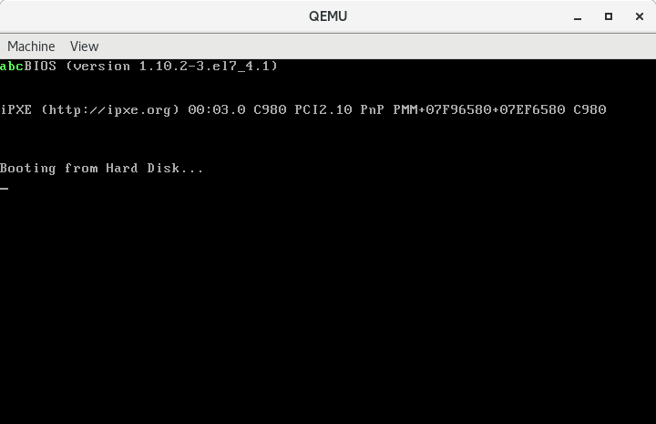

004-理解一下堆栈
Contents
本文将详细分析一下计算机上堆栈细节。
基础知识
先解释一下堆栈。实际上这个堆栈和堆(heap)并没有关系，只是一个纯粹的栈(stack)。
堆栈段和其他段一样，只是一段普通的内存空间，只是我们限制了对这部分内存空间操作的行为。我们只允许通过push（压栈）和pop（出栈）这两个指令来操作堆栈段的内存空间，以此来实现一些算法。使用堆栈段之前需要先初始化段基址(ss)和栈顶指针(sp)，例如将ss初始化为0x0000，sp初始化为0x7c00。此时堆栈段的逻辑地址为0x0000:0x0000到0x0000:0x7c00，对应的物理地址为0x00000到0x07c00。
push指令用于将操作数压入栈中。在16位的处理器上，push指令的操作数可以是16位的寄存器或者内存单元。对于8086处理器来说，压栈的数据长度必须是一个字。处理器在执行push指令时，首先将堆栈指针寄存器sp的内容减去操作数的字长（以字节为单位的长度，在16位处理器上是2），然后，把要压入堆栈的数据存放到逻辑地址ss:sp所指向的内存位置。当ss和sp初始化为上述状态时，第一次执行push指令，sp先减去2，得到0x7bfe，然后将数据压入0x0000:0x7bfe对应的物理地址处。
pop指令用于将操作数从栈中弹出。在16位的处理器上，pop指令的操作数可以是16位的寄存器或者内存单元。pop指令执行时，处理器先取得ss:sp对应的物理地址处的数据。然后，将sp的内容加上操作数的字长，以指向下一个堆栈位置。
示例
下面我们通过一小段代码来熟悉一下堆栈段的操作。
.code16
movw $0xb800, %ax
movw %ax, %ds
xorw %ax, %ax
movw %ax, %ss
movw $0x7c00, %sp
pushw $'c' | 0x0a00
pushw $'b' | 0x0a00
pushw $'a' | 0x0a00
popw 0
popw 2
popw 4
jmp .
.org 510
.word 0xaa55
-
第
3、4行我们让ds指向显存缓冲区，这样我们在后续将数据弹出到显存缓冲区时就不需要加段前缀了。 -
第
6、7行将ss设置为0x0000，实际上这不是必须的，因为ss在启动时就会被初始化为0x0000。 -
第
9行将堆栈指针寄存器sp设置为0x7c00。 -
第
11~13行将字符c、b、a及其显示属性0x0a一起压入栈中。因为栈是后进先出的，所以出栈的顺序是a、b、c。 -
第15~17行将a、b、c依次出栈。因为我们直接指定了偏移地址0、2、4，这默认会使用数据段寄存器ds作为基地址，所以实际上表示将三个字符及其显示属性依次弹出到内存
0xb800:0x0000、0xb800:0x0002、0xb800:0x0004处，实现字符的打印。
运行
# as --32 boot.s -o boot.o
# objcopy -O binary -j .text boot.o boot.bin
# qemu-system-i386 boot.bin

调试
启动虚拟机：
# qemu-system-i386 boot.bin -S -s
启动GDB进行调试：
# gdb -q
(gdb) target remote localhost:1234
Remote debugging using localhost:1234
0x0000fff0 in ?? ()
(gdb) set architecture i8086
warning: A handler for the OS ABI "GNU/Linux" is not built into this configuration
of GDB. Attempting to continue with the default i8086 settings.
The target architecture is assumed to be i8086
(gdb) display/i $cs*16+$pc
1: x/i $cs*16+$pc
0xffff0: ljmp $0xf000,$0xe05b
(gdb) b *0x7c00
Breakpoint 1 at 0x7c00
(gdb) c
Continuing.
Breakpoint 1, 0x00007c00 in ?? ()
1: x/i $cs*16+$pc
=> 0x7c00: mov $0xb800,%ax
第12行提示我们已经在0x7c00处打好了断点，让我们看一下此时寄存器的状态。
(gdb) info registers
eax 0xaa55 43605
ecx 0x0 0
edx 0x80 128
ebx 0x0 0
esp 0x6ef4 0x6ef4
ebp 0x0 0x0
esi 0x0 0
edi 0x0 0
eip 0x7c00 0x7c00
eflags 0x202 [ IF ]
cs 0x0 0
ss 0x0 0
ds 0x0 0
es 0x0 0
fs 0x0 0
gs 0x0 0
ds是0，ss是0，sp是0x6f04。向后执行5条指令再次查看寄存器内容。
(gdb) si 5
0x00007c0c in ?? ()
1: x/i $cs*16+$pc
=> 0x7c0c: push $0xa63
(gdb) info registers
eax 0x0 0
ecx 0x0 0
edx 0x80 128
ebx 0x0 0
esp 0x7c00 0x7c00
ebp 0x0 0x0
esi 0x0 0
edi 0x0 0
eip 0x7c0c 0x7c0c
eflags 0x246 [ PF ZF IF ]
cs 0x0 0
ss 0x0 0
ds 0xb800 47104
es 0x0 0
fs 0x0 0
gs 0x0 0
此时ds是0xb800，ss是0，sp是0x7c00。再向后执行3条指令并查看寄存器内容。
(gdb) si 3
0x00007c15 in ?? ()
1: x/i $cs*16+$pc
=> 0x7c15: popw 0x0
(gdb) info registers
eax 0x0 0
ecx 0x0 0
edx 0x80 128
ebx 0x0 0
esp 0x7bfa 0x7bfa
ebp 0x0 0x0
esi 0x0 0
edi 0x0 0
eip 0x7c15 0x7c15
eflags 0x246 [ PF ZF IF ]
cs 0x0 0
ss 0x0 0
ds 0xb800 47104
es 0x0 0
fs 0x0 0
gs 0x0 0
此时因为执行了3次push指令，所以sp的值已经从0x7c00减到了0x7bfa，正好3个字，6个字节。我们来查看一下从0x7bfa开始的三个字的内容。
(gdb) x/3xh 0x7bfa
0x7bfa: 0x0a61 0x0a62 0x0a63
其中高字节是显示属性0x0a，低字节依次是0x61、0x62、0x63，对应字符a、b、c。
方便的调试技巧
目前，我们已经使用多次qemu结合GDB进行调试程序，为了避免每次调试都要重复输入很多指令，我们可以创建一个文件.gdbinit:
# $ echo "set auto-load safe-path /" >> ~/.gdbinit
target remote localhost:1234
set architecture i8086
display/i $cs*16+$pc
b *0x7c00
c
注意：文件的第一行是注释，在执行之前，需要执行一下该注释里的命令：
# echo "set auto-load safe-path /" >> ~/.gdbinit